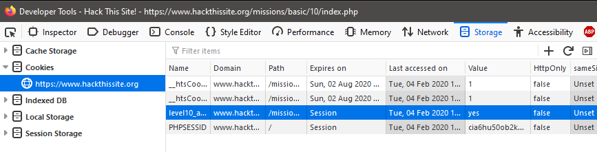

Hackthissite is a free training ground for various hacking exercises as well as a community, and it exists for quite a while now (at least since 2004).
Basic missions
The basic missions just require some HTML to solve. The objective is to figure out some passwords to advance to the next exercise.
Exercise 1 is based on an html file which actually contains the plain text password in a comment. Reading the source code of the page is enough.
Exercise 2 specifies that the password is compared to a file, but this file is missing. After looking around in the sourcecode for another clue, I realized that an empty string also does just fine.
In exercise 3, there is a page 'password.php' referenced in the html form. This php page can be freely accessed via url, and it contains the password in plaintext.
Exercise 4 has a password being sent to an email adress. However, this email is stated in the code. By either copying the page and executing it locally, or by using the 'inspect page' feature of firefox and changing the code directly in the browser, the email can be changed in such a way that the attacker is the recipient of the password reminder.
For exercise 6, the approach is quite different. We need to break a very, very weak 'encryption' scheme by just looking at some examples of inputs and outputs. When I put in "abc123", it became quickly obvious that the ith character is replaced by this character incremented by i, starting at 0. Example:
a+0 = a
b+1 = c
c+2 = e
1+3 = 4
2+4 = 6
3+5 = 8
And the 'encrypted' password becomes ace468. Now we just have to do that in reverse for the given 'encrypted' password, fe5ee79i, and we arrive at fd3ba23b. Luckily, there wasn't even some kind of wraparound / overflow.
Exercise 7 was a lot more fun than the previous ones. The site admin has placed a functionality on his website that returns the result of the unix cal command. At the same time, the file with the password is stored somewhere in the same directory under some unknown name. By using ";" as a seperator, we can make the calendar form return the outputs of more than one command. Putting in "; ls" gives us not only the calendar, but also the filename, which is k1kh31b1n55h.php (see image). Navigating to this unprotected file, we can read the password in plaintext.
In exercise 8, the trick doesn't work quite the same. The user input is apparently not directly executed, but a file is created. This can later be displayed, and it has the extensions shtml. Those are server-side include executables. Following their syntax, we can enter
Exercise 9 is actually really similar. This time, we have to use the insecure form for level 8 to navigate two levels up in the directory and then go inside the folder for exercise 9. There we can find the file p91e283zc3.php, which gives us the password.

Exercise 11 just shows a very simple page with a randomly picked title of a song. I played around with the directories to see if I could navigate anywhere, but "tmp" and "a" did not work. Not being particularly into Elton John, it took me a while to see the connection and figure out that /e/ was a working subdirectory. From there, I could navigate through e/l/t/o/n, but the final directory did not lead anywhere. The clue for the exercise states that the admin "doesn't know apache very well". After some googling, I found that .htaccess files are used in apache to create password protected websites. The file https://www.hackthissite.org/missions/basic/11/e/l/t/o/n/.htaccess contains just the following info: